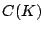
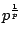
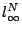
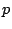
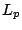
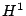
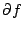
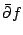

Next: About this document ...
Up: Publications
Previous: Unrefereed Publications
- (with R. Ober) Bilinear transformation of infinite dimensional state
space systems
and balanced realizations of nonrational transfer functions, S.I.A.M. J. of Control 28 (1990), 438-465.
- The Gaussian cotype of operators from , Israel
Journal of Math. 68 (1989), 123-128.
- The distribution of Rademacher sums, Proc. A.M.S. 109
(1990), 517-522.
- The  in Pisier's factorization
theorem, Proceedings of Conference on Geometry of Spaces at Strobl, Ed.:
P.F.X. Müller and W. Schachermayer, L.M.S. 1990.
- (with M. Talagrand) The Rademacher cotype of operators from
, Proc. A.M.S. 112 (1991), 187-194.
- (with D.J.H. Garling) Complemented subspaces of spaces
obtained by interpolation, J. L.M.S. (2) 44 (1991),
503-513.
- (with P. Saab) -summing operators on injective tensor
products of spaces, B. Royal Soc. Edin. 120A, (1992),
283-296.
- Comparison of Orlicz-Lorentz spaces, Stud. Math. 103 (2), (1992), 161-189.
- (with N. Asmar) On the distribution of
Sidon series, Arkiv Mat. 31, (1993), 13-26.
- (with S.J. Dilworth)
The distribution of vector-valued Rademacher series, Annals Prob. 21, (1993), 2046-2052.
- (with N. Asmar) Littlewood-Payley Theory on solenoids, Colloq. Math. 65, (1993), 69-82.
- (with N.J. Kalton) Set functions and factorization, Arch. Math. 61, (1993), 183-200.
- The distribution of non-commutative Rademacher series, Math. Ann. 302, (1995), 395-416.
- (with V.H. de la Peña and J. Szulga)
Contraction and decoupling inequalities for
multilinear forms and U-statistics, Annals Prob., 22, (1994), 1745-1765.
- (with Y. Latushkin) Lyapunov Theorems for Banach Spaces, Bul. A.M.S. 31, (1994), 44-49.
- (with Y. Latushkin) Evolutionary semigroups and Lyapunov theorems
in Banach spaces, J. Func. Anal. 127, (1995), 173-197.
- (with V.H. de la Peña) Bounds on the Tail Probability of
U-Statistics and Quadratic Forms, Bul. A.M.S. 31, (1994),
223-227.
- Comparison of sums of independent identically distributed
random vectors, Prob. and Math. Stat. 14, (1993),
281-285.
- (with V.H. de la Peña) Decoupling Inequalities for the
Tail Probabilities of
Multivariate U-statistics, Annals Prob. 23, (1995), 806-816.
- (with P. Hitzcenko)
Tangent Sequences in Orlicz and Rearrangement Invariant
Spaces, Proc. Camb. Phil. Soc. 119, (1996),
91-101.
- The Hardy operator and Boyd indices,
Interaction between Probability, Harmonic Analysis and Functional Analysis,
Ed.: N. Kalton, S.J. Montgomery-Smith, E. Saab,
Lecture Notes in Pure and
Appl. Math., 175, Marcel Dekker, New York, 1995.
- Boyd Indices of Orlicz-Lorentz spaces, Function Spaces, The Second Conference, Ed.: K. Jarosz,
321-334, Marcel Dekker, 1995.
- (with C. Chicone and Y. Latushkin)
The spectrum of the kinematic dynamo operator for an ideally conducting
fluid, Commun. Math. Phys. 173, (1995), 379-400.
- (with Y. Latushkin and T. Randolph)
Evolutionary semigroups and dichotomy of linear skew-product flows
on locally compact spaces with Banach fibers, J. Diff. Eq. 125, (1996), 73-116.
- Stability and dichotomy of positive semigroups on , Proc. A.M.S. 8, (1996), 2433-2437.
- (with A.L. Koldobsky)
Inequalities of correlation type for symmetric stable
random vectors, Stat. & Prob. Letters. 28, (1996), 91-97.
- (with N. Asmar and B. Kelly)
A note on UMD spaces and transference in vector-valued
function spaces, Proc. Edin. Math. Soc. 39, (1996),
485-490.
- (with N. Asmar) Hahn's Embedding Theorem on orders and harmonic
analysis on groups with ordered duals, Colloq. Math. 70,
(1996), 235-252.
- (with C. Chicone and Y. Latushkin) The Annular Hull Theorems for the
Kinematic Dynamo Operator for an Ideally Conducting Fluid, Indiana J. 45, (1996), 361-379.
- (with L. Grafakos) Best constants for uncentered maximal functions,
Bul. L.M.S. 29, (1997), 60-64.
- (with P. Hitczenko and K. Oleszkiewicz) Moment inequalities for linear
combinations of certain independent random variables, Studia Math. 123, (1997), 15-42.
- (with N. Asmar) Hardy martingales and Jensen's Inequality, Bull. Australian Math. Soc. 55, (1997), 185-195.
- (with N. Asmar)
On a weak type
 inequality for a maximal conjugate
function, Studia Math. 125, (1997),
13-21.
inequality for a maximal conjugate
function, Studia Math. 125, (1997),
13-21.
- Time decay for the bounded mean oscillation of solutions of
the Schrödinger and wave equations, Duke Math. J. 91, (1998), 393-408.
- (with N. Asmar)
Analytic measures and Bochner measurability, Bull. Sc. Math. 122, (1998), 39-66.
- (with N. Asmar) A transference theorem for ergodic ,
Quarterly J. of Math. 48, (1997), 417-430.
- (with N. Asmar and A. Kelly) Vector-valued weakly analytic measures,
Hokkaido Math. J., 27, (1998), 457-473.
- (with E. Semenov) Random rearrangmements and operators, 25 Years of Voronezh Winter Mathematical School, Proceedings in
honor of 80th birthday of S. Krein, A.M.S.
- Concrete representation of martingales,
Electronic J. Probab. 3, (1998), paper 15.
- Global regularity of the Navier-Stokes equation on thin
three dimensional domains with periodic boundary conditions,
Electronic J. of Differential Equations 1999, (1999), no. 11,
1-19.
- (with L. Grafakos and O. Motrunich) A sharp estimate for the
Hardy-Littlewood maximal function, Studia Math. 134, (1999), 57-67.
- (with P. Hitczenko) A note on sums of independent random variables,
Advances in Stochastic Inequalities, Ed.: T. Hill and C. Houdré,
Contemporary Mathematics 234, A.M.S., Providence R.I., 1999.
- (with N. Asmar and S. Saeki) Transference in spaces of measures,
J. Functional Analysis 165, (1999), 1-23.
- (with E. Semenov) Title in Russian -- translation:
Averaging of Fourier-Haar coefficients,
Math. Sbornik. 190, (1999), 49-64.
- (with A. Baernstein) Some conjectures about integral means
of  and
,
Complex Analysis and Differential Equations, edited by C.Kiselman, Acta
Universitatis Upsaliensis C., Volume 64 (1999), 92-109.
- (with S. Clark, Y. Latushkin and T. Randolph)
Stability radius and internal versus external stability in Banach spaces:
an evolution semigroup approach, S.I.A.M. J. of
Control Optim. 38, (2000), 1757-1793.
- (with E. Semenov) Embeddings of rearrangement invariant spaces
that are not strictly singular, Positivity 4, (2000), 397-402.
- (with A. Pruss) A comparison inequality for sums of independent
random variables, J.M.A.A. 254, (2001), 35-42.
- (with P. Hitczenko) Measuring the magnitude of sums of independent
random variables, Annals Probability 29, (2001), 447-466.
- Finite time blow up for a Navier-Stokes like equation,
Proc. A.M.S., 129, (2001), 3017-3023.
- (with N. Asmar) Decomposition of analytic measures on groups,
Studia Math, 146, (2001), 261-284.
- (with M. Pokorný) A counterexample to the smoothness of the solution
to an equation arising in fluid mechanics, Commentationes Mathematicae Universitatis Carolinae, 43, 1, (2002),
61-75.
- Rearrangement Invariant Norms of Symmetric Sequence Norms of
Independent Sequences of Random Variables, Israel Journal
of Mathematics, 131, (2002), 51-60.
Next: About this document ...
Up: Publications
Previous: Unrefereed Publications
Stephen Montgomery-Smith
2003-01-17